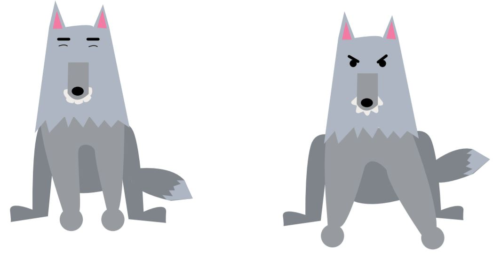

I denne opgave blev vi introduceret til javascript, jQuery samt programmet Illustrator. Der skulle tilegnes en forståelse for forskellige billedformater og vektor til design af karakterer.
Animationerne skulle kunne manipuleres sammenkædes flere animationer i interaktive sekvenser. Dette blev gjort i henhold til flowchart og sekvensdiagram og det færdige produkt var en lille fortælling/minispil om en mand og en ulv.